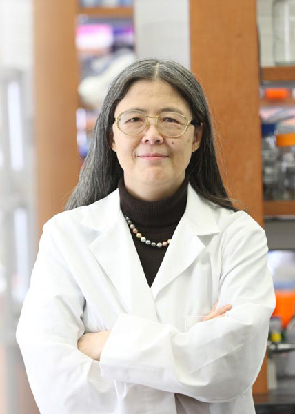

RECOMB-SEQ: FOURTH ANNUAL RECOMB SATELLITE WORKSHOP ON MASSIVELY PARALLEL SEQUENCING
March 31st - April 1st 2014
Pittsburgh, PA, USA
Conference chairs: Mihai Pop (University of Maryland), Ali Bashir (Mount Sinai School of Medicine)
RECOMB-SEQ IS NOW IN SESSION!
#RECOMBSEQ2014
Participate in the Google Group discussion!
About the Workshop
RECOMB-seq is a workshop held immediately before the main RECOMB conference, with a distinct paper submission process and program. Our goal is to bring together the community of scientists working on methods for the analysis of modern DNA sequencing data.
Scope
The recent revolution in sequencing technology
has opened the door for myriads of new applications and bio-medical
discoveries. The genomes of thousands of human individuals have already
been sequenced and sequencing is increasingly becoming a part of
clinical diagnostics, especially in the context of cancer.
Furthermore, efforts are underway to map the genomic diversity on
earth, whether in vertebrate species (e.g., the Genome10K project), or
in the microbial ecosystems that
live in our bodies (e.g., the Human Microbiome project) and our
environment (e.g., the Earth Microbiome Project). The complexity and
sheer size of the data generated in such projects have highlighted the
limitations of current analytical methods. As technology continues to
evolve, we are faced with increasing challenges in managing,
processing, and extracting meaningful biological information from the
data being generated.
We would like to invite contributions describing new methodology aimed at dealing all aspects of massively parallel sequencing data, including, but not limited to:
- Translational applications of sequencing data, including cancer genomics and infectious disease diagnostics and surveillance
- Discovery and genotyping of genomic variants, including SNPs, indels, and structural variants
- Local and de novo sequence assembly
- RNA sequencing, including the analysis of RNA expression and novel transcript assembly
- Epigenetics, including ChIP-SEQ analysis, methylation profiling, and histone modifications
- Metagenomics
- Read mapping
- Methods for emerging sequencing technologies, such as single-cell or single molecule real time sequencing
Program and Accepted Papers
Tentative Program for RECOMB-Seq 2014Keynote Speakers
|  | Prof. Cecilia Lo F. Sargent Cheever Chair of the Department of Developmental Biology University of Pittsburgh School of Medicine Homepage Prof. Lo is a world renowned developmental biologist who has pioneered innovative approaches for studying developmental mechanisms of congenital heart disease. Her work provides a compelling example of how genomic technologies can be integrated with imaging, mutagenesis, and other experimental approaches to uncover the basis of complex developmental diseases. |
|
 |
Prof. Ben Raphael Associate Professor, Department of Computer Science Director of the Center for Computational Molecular Biology Brown University Homepage Prof. Raphael's research is at the interface between computer science, mathematics, and biology. He focuses on the design of combinatorial and statistical algorithms for the interpretation of genomes. Particular areas of emphasis include analysis of structural variation in human and cancer genomes, and network/pathway analysis of genetic variants. He is the recipient of a Career Award at the Scientific Interface from the Burroughs Wellcome Fund, an Alfred P. Sloan Research Fellowship, and a National Science Foundation CAREER award. |
Important dates
Paper submission open: September 20, 2013Regular paper submission deadline: December 16, 2013
Deadline for paper resubmitted from RECOMB: December 16, 2013
Paper acceptance notification: January 23, 2014
Paper final version due: Feburary 13, 2014
Emerging Trends/Poster submission open: January 6, 2014
Emerging Trends/Poster submission deadline: February 7, 2014
Poster acceptance notification: February 14, 2014
Paper and Poster Submission
We are soliciting high-quality contributions
that will go through a rigorous peer-review process. Selected papers
will be presented at the workshop and published in a special
proceedings issue of BMC Bioinformatics. Please pay close attention to manuscript preparation instructions.
In addition we are soliciting original contributions, including significant research in progress to be presented as posters during RECOMB-Seq. The accepted poster abstracts will be published in the workshop book of abstracts. Simultaneous submissions of the same poster to both RECOMB and RECOMB-Seq are permitted. Please pay close attention to poster preparation instructions.
Emerging trends session
This year we plan to organize a session on emerging trends in the use of sequencing data in biomedical research. The goal of this session is to provide a forum for research in progress in new sequencing technologies and applications of sequencing technologies in new application domains. Oral presentations for this session will be selected from among the poster abstracts.Submission link
Papers and poster abstracts can be submitted through EasyChair http://www.easychair.org/conferences/?conf=recombseq2014
Special Handling of Papers Submitted to
RECOMB'2014
If you would like to consider submitting a
paper rejected by RECOMB'2014 to the satellite workshop, you may do so up to December 16(one
week after the RECOMB deadline). You must include in your
submission the reviews received at RECOMB together with a rebuttal
addressing the concerns raised by the reviewers. Ideally the
submitted manuscript must also have been modified according to the
reviews, or provide an explanation of why modifications are
unnecessary. If additional time is needed to make the necessary
changes,
please outline in your submission how you plan to address the
comments. Should your paper be accepted, an adequately revised
paper must be submitted by the full paper submission deadline. All
reviews will be treated confidentially and will only be
visible to the PC members evaluating your paper.
Please note that acceptance to RECOMB-Seq is not guaranteed even if
you have revised your submission. All papers, including those
submitted directly to RECOMB-Seq, will be equally evaluated on the
basis of scientific quality, technical novelty and level of interest to
the RECOMB-Seq community.
Manuscript preparation instructions
The cover page should contain the title, author(s) names and affiliations, an abstract, the keywords, and the contact author e-mail. The manuscript should start with a succinct statement of the problem, the results achieved, their significance, and a comparison with previous work. This material should be understandable to non-specialists. A technical exposition directed to the specialist should follow. The length, excluding cover page and bibliography, should not exceed 10 pages. The manuscript should be easy to read, using at least 11 point font size on U.S. standard 8 1/2 by 11 inch paper with no less than one inch margin all around. If the authors believe that more details are absolutely necessary to substantiate the claims of the paper, they may include a clearly marked appendix, which might be read at the discretion of the reviewers. Manuscripts that deviate significantly from these guidelines risk rejection without consideration of their merits.
Also pay close attention to the BMC manuscript preparation guidelines.
Poster preparation instructions
Please submit a one-page abstract (about 200
words, plain justified text in at least 10pt character size, formatted
to fit A4: 21 x 29.7 cm) of your poster including title, author(s),
affiliation, e-mail and abstract text, via the easychair system. The
actual poster space will be 90 x 120 cm (width x height), which
corresponds to A0 format (or 16 pages in A4 format).
Steering Committee
- Cenk Sahinalp, Simon Fraser University
- Eran Halperin, Tel Aviv University
- Michael Brudno, University of Toronto
- Ben Raphael, Brown University
- Inanc Birol, Canada's Michael Smith Genome Sciences Centre
Program Committee
- Todd Treangen, National Biodefense Analysis and Countermeasures Center
- Chun Ye, Broad Institute
- Manja Marz, University of Jena
- Ben Langmead, John Hopkins University
- Dominique Lavenier, INRIA
- Niranjan Nagarajan, Genome Institute of Singapore
- Laurent Noe, INRIA
- Pierre Peterlongo, INRIA
- Helene Touzet, INRIA
- Titus Brown, Michigan State University
- Xuegong Zhang, Tsinghua University
- Louxin Zhang, National University of Singapore
- Kai Tan, University of Iowa
- Jerome Waldispuhl, McGill University
- Lusheng Wang, City University of Hongkong
- Xiaohui Xie, UC Irvine
- Dong Xu, University of Missouri
- Arlindo Oliveira, INESC-ID
- Teresa Przytcka, NIH NCBI
- Ben Raphael, Brown University
- Marie-France Sagot,INRIA
- Cenk Sahinalp, Simon Fraser University
- Steven Skiena, SUNY
- Andrew Smith, University of Southern California
- Thomas Lengauer, Max Planck Institute for Informatics
- Ming Li, University of Waterloo
- Jinze Liu, University of Kentucky
- Stefano Lonardi, University of California, Riverside
- Satoru Miyano, The University of Tokyo
- Bernard Moret, Swiss Federal Institutes of Technology
- William Noble, University of Washington
- Heng Huang, University of Texas
- Sorin Istrail, Brown University
- Rui Jiang, Tsinghua University
- Hyunju Lee, Gwangju Institute of Science and Technology
- Kun-Mao Chao, National Taiwan University
- Ting Chen, University of Southern California
- Francis Chin, University of Hong Kong
- Nadia El-Mabrouk, University of Montreal
- Joel Bader, Johns Hopkins University
- Dongbo Bu, Chinese Academy of Sciences
- Tatsuya Akutsu, Kyoto University
- Max Alekseyev, University of South Carolina
- Gang Fang, Mount Sinai School of Medicine
- Sergey Koren, National Biodefense Analysis and Countermeasures Center
- Haixu Tang, Indiana University
- Shaojie Zhang, University of Central Florida
- Vikas Bansal, Scripps Translational Science Institute
- Menachem Fromer, Mount Sinai School of Medicine
- Bojan Losic, Mount Sinai School of Medicine
- Adam Phillippy, National Biodefense Analysis and Countermeasures Center
- Michael Schatz, Cold Spring Harbor Laboratory
- Mark Chaisson, University of Washington